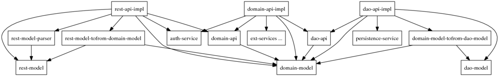

In a recent project we had very hard time finding a common language to describe our target architecture design. One common argument was about finding the "correct layer" for each piece of the system.
Architecture is often visualized as layers. Although layer is a useful concept, it's not enough and can be a very restricting way of thinking about the architecture.
A purely layered design is one-dimensional so the full capacity of the paper or screen is not utilized. When forcing things to layers, different people make different choices, and this makes communication more difficult.
For example, utilities and services are difficult to place in any layer. They are (literally) orthogonal to the layered design, potentially used from anywhere, while the dependencies between the actual layers are more controlled. In addition, I feel that often the interfaces between layers are forgotten, and only the implementations are counted as layers.
Architecture is essentially about dividing a problem into subproblems, or modularization, and managing dependencies between the modules. So, on the abstract level, the big picture of the software is a dependency graph of the modules.
One day I realized that the only hard part in design is to identify the subproblems and their dependencies. Divide and conquer. That part wasn't the subject of any arguments. The problem was only about visualizing it. And that, difficult as it seemed for us, is just about applying a graph layout algorithm, and computers are good at that!
So, we started documenting our modules and dependencies as a dot script (let's call this simplified and slightly obfuscated example design.dot):
digraph G {
node [shape="record"]
The project was a server with a REST interface. So, there would be a REST API implementation, a model for it and a parser that transforms REST requests to model objects:
"rest-api-impl" -> "rest-model" "rest-api-impl" -> "rest-model-parser" "rest-model-parser" -> "rest-model"Since the REST API and model are higly coupled to external requirements, the REST API implementation should delegate domain logic to a dedicated domain API which has its own model. It uses a transformer module to transform between the two models:
"rest-api-impl" -> "domain-api" "domain-api" -> "domain-model" "rest-api-impl" -> "domain-model" "rest-api-impl" -> "rest-model-tofrom-domain-model" "rest-model-tofrom-domain-model" -> "rest-model" "rest-model-tofrom-domain-model" -> "domain-model"The domain API is abstract and it needs an implementation. The implementation also uses the domain model:
"domain-api-impl" -> "domain-api" "domain-api-impl" -> "domain-model"The REST API implementation is responsible for authenticating requests using a service. The domain logic uses the same service for authorization.
"rest-api-impl" -> "auth-service" "domain-api-impl" -> "auth-service"The domain logic also needs some external services. One of them is persistence for the domain model, and the domain logic shields itself from its details with a DAO interface:
"domain-api-impl" -> "ext-services ..." "domain-api-impl" -> "dao-api" "dao-api" -> "domain-model" "dao-api-impl" -> "dao-api" "dao-api-impl" -> "domain-model" "dao-api-impl" -> "persistence-service"The nature of the persistence service calls for yet another model, the DAO model. The DAO implementation uses a transformer to transform between the domain model and the DAO model:
"dao-api-impl" -> "dao-model" "dao-api-impl" -> "domain-model-tofrom-dao-model" "domain-model-tofrom-dao-model" -> "domain-model" "domain-model-tofrom-dao-model" -> "dao-model"That's it, end of graph:
}
Then we asked Dottie, our new chief architect, to design the system:
$ dot -Tps design.dot -o design.ps && gv design.ps

Everybody was immediately satisfied (and stopped laughing at the mouseless graphing tool)!
The picture nicely utilizes two dimensions: the layers (REST, domain and DAO) are drawn horizontally, like in a call sequence. The vertical dimension visualizes dependencies: they flow mostly downwards so the most stable modules are on the bottom.
The most important row, the bottom one, is about data. "Good programmers worry about data structures and their relationships" (Torvalds). The middle row consists of service interfaces and model transformers, the "glue". And in the top row we have the actual logic of the layers.
The interfaces between layers can be seen very clearly: they are the modules in between that both sides depend on. For example, if a new user interface is needed, it just needs to know how to talk to auth-service, domain-api and domain-model.
Another striking discovery is that the whole graph is drawn around the domain model. Good work, Dottie!
Originally published on 2011-01-28 at http://www.jroller.com/wipu/entry/design_as_graph_layout_problem under category Software Architecture